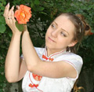
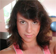

STRONA GŁÓWNA
TANIEC
FITNESS
O NAS
KADRA
GRAFIK ZAJĘĆ
GALERIA
CENNIK
PARTNERZY
DLA FIRM
KONTAKT
Taniec
Marta Kutyła
 Studentka ostatniego roku Uniwesrtytetu Pedagogicznego w Krakowie. Z tańcem związana jest od 4 roku zycia. Absolwentka Krakowskiej Akademi Tańca "L'art dle la Dance" oraz Szkoły Baletowej w Krakowie. Posiada dyplom: specjalność tancerz-choreograf. Pochwalić może sie angażem w Krakowskiej Operze i Operetce oraz licznymi wystepami w teatrach krakowskich. Zajmuje sie głównie tańcem klasycznym oraz współczesnym i tańcem jazzowym. Jest otwarta również na inne techniki taneczne, bo jak mówi taniec to całe jej życie.
Prowadzi zajęcia:
Balet
Jazz
Marek Kutyła "Freezee"
Tańcem zajmuje się od 1998 roku. Swoja przygodę zaczynał przecierając szlaki krakowskiego break dance'u. Jednak b-boying był niewystarczajacy, dlatego eksperymentował z innymi rodzajami ruchu. Zajmował się m.inn. capoeira'ą, MAT (Martial Art Tricks), i gimnastyką sportową. Mimo wszystko taniec pozostał jego największą pasją, którą rozwija do dziś. Jego specjalność to dynamiczne i nieprzewidywalne układy do muzyki hip hop i R'n'B. Traktuje choreografie jak przygodę zarówno dla uczestników jak i dla Siebie. Nie lubi działać standardowo, uwielbia eksperymenty z ruchem i muzyką. Od około trzech lat jego tanecznym światem zawładnął KRUMPin, niezwykle ekspresyjny, dynamiczny i nieskrempowany styl tańca z przdmieść L.A.
Jest zapraszany do prowadzenia różnych warsztatów i pokazów tanecznych.
Prowadzi zajęcia:
Hip-Hop
Krumping
Martyna Szarek
 Swoją karierę taneczną rozpoczęła od dłuższej przygody z tańcem towarzyskim. Po kilku latach nauki postanowiła spróbować swoich sił w innych technikach tanecznych, jednak dalej w duchu tańców latynoamerykańskich takich jak: salsa on 1(LA), salsa on 2(mambo), bachata, merengue, regeton.. Ze względu na swoje długoletnie i różnorodne doświadczenie taneczne i sportowe, wprowadziła do swojej salsy różne techniki tańca, przez co wypracowała swój własny, unikalny styl, który można poznać po prostych figurach połączonych z licznymi "dodatkami" z innych technik tanecznych .Na zajęciach zwraca szczególną uwagę na technikę i postawę w tańcu bo właśnie dzięki tym elementom możemy być niezwykłymi tancerzami. A obok tego nie zapominajmy ze taniec to nie rywalizacja na parkiecie tylko "słodka chwila w ruchu".
Prowadzi zajęcia:
Salsa
wykonanie:
projektowanie stron www
© SempreTaniec.pl Wszelkie prawa zastrzeżone!